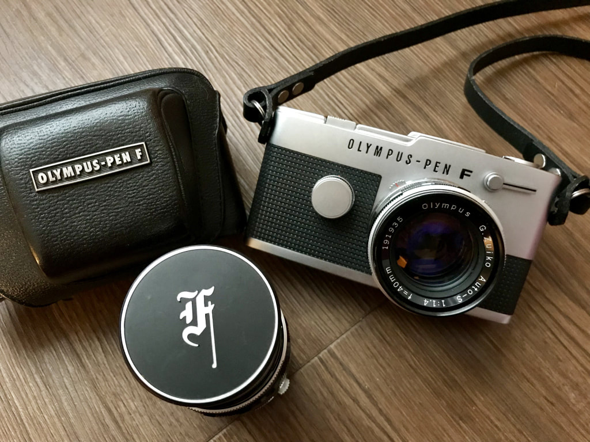

By Natalie Smart. The gold standard of half frame SLRs. She fell in love with this camera before she even knew what half frame photography was.

I first discovered this camera when I was reading the Tokyo Camera Style book by John Sypal. I initially fell in love with the design but was also very intrigued when I discovered it was a half frame camera. After further research I discovered that a half frame camera uses twice as many frames at half the normal frame width — if you load a 36-exposure film, you get 72 images instead of 36.
After extensive research, I settled on the Olympus Pen FT. The FT added a built-in TTL meter to the Pen F package, making it the most practical of the Pen SLRs for everyday use. The quality of the Zuiko lenses available for this system is exceptional, and the ability to actually see through the lens makes composition considerably easier than rangefinder or viewfinder-based half frames.
This review originally appeared on Natalie Smart's film photography blog. Read the full original post at nataliesmartfilmphotography.wordpress.com.